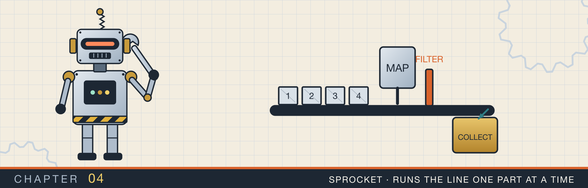
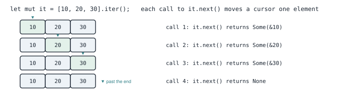
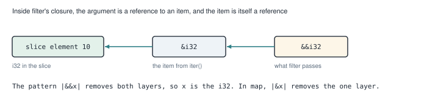
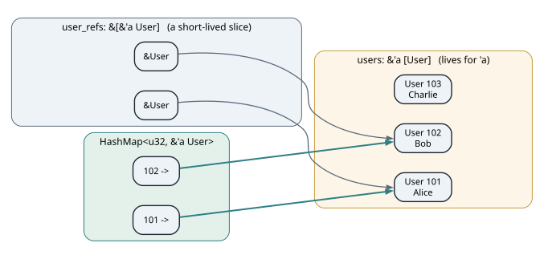

Iterators and references
This chapter covers
- The
Iteratortrait and howforloops desugar tonextcalls - The three collection traversal modes: shared reference, mutable reference, and by value
- Chaining lazy adapters (
filter,map) and driving execution with consumers (collect) - Why
filterclosures receive&&T, and how pattern destructuring (|&&x|) strips reference layers - Lifetimes: what they represent, why the compiler requires them across function boundaries, and how to read
'a - Indexing a slice with a
HashMapof borrowed references without cloning elements
Zero-cost collection traversal in Rust rests on two interlocking abstractions: lazy pull-based iterators and statically verified borrowing lifetimes. Together, they enable composable data pipelines and zero-copy indexing structures without garbage collection or dangling pointers.
The first half of this treatment formalizes the Iterator trait, its desugaring from for loops, and how lazy adapters compose without allocating intermediate buffers. The second half formalizes references and lifetimes. A lifetime is the static program region over which a reference is guaranteed to refer to valid, initialized memory; explicit 'a annotations express borrowing contracts across function boundaries so the borrow checker can verify soundness compositionally.
Both mechanisms converge in a complete program that indexes a slice of User structs by identifier using a HashMap of borrowed references, eliminating struct cloning altogether.
4.1 What an iterator is
An iterator is a stateful value implementing the Iterator trait, which requires a single method, next. Each call to next yields Some(item) while elements remain and None once the sequence is exhausted.
Conceptually, a slice iterator behaves like a cursor positioned just before the first element. Each next call advances the cursor and yields a reference to the element it crosses (Figure 4.1).

[10, 20, 30]. Each call to next returns one item. After the last item, it returns None.Application code rarely calls next manually because Rust’s for loop desugars directly to it. The loop:
for x in [10, 20, 30].iter() {
println!("{x}");
}is equivalent to:
let mut it = [10, 20, 30].iter();
while let Some(x) = it.next() {
println!("{x}");
}The while let Some(x) = it.next() loop continues pulling items until next returns None. The argument parser in Section 2.8 used this explicit form so the loop body could call next a second time to consume flag values.
4.2 Three ways to walk a collection
A collection such as Vec<String> owns its elements. Iterating over it requires choosing how each element is accessed: by shared reference, by mutable reference, or by owned value. Each mode corresponds to a distinct method (Figure 4.2).

iter()yields&T(shared references), leaving the collection intact and usable afterward.iter_mut()yields&mut T, permitting in-place mutation of each element.into_iter()yieldsTby value, moving ownership out of the collection so the collection cannot be accessed afterward.
In a for loop, the expression following in selects the mode automatically: for x in &names calls names.iter(), for x in &mut names calls names.iter_mut(), and for x in names calls names.into_iter(), consuming names.
TIP: When an iterator item’s exact reference depth is unclear, inserting a deliberate type mismatch such as let () = x; inside the loop forces the compiler to print the inferred type of x in its diagnostic.
4.3 Chaining iterators
An iterator adapter wraps one iterator to produce another. filter retains only items for which a predicate closure returns true, while map transforms each item through a closure. By contrast, collect is a consumer: it drives the pipeline to completion and materializes the output into a target collection such as a Vec or HashMap.
Figure 4.3 traces three values flowing through a filter and map pipeline.
![Stages iter, filter, map, collect. &10 and &20 pass the filter, &15 is dropped, map turns them into 100 and 200, collect builds vec![100, 200]](figures/iter-pipeline.svg)
filter.Rust iterator adapters are lazy. Evaluating iter().filter(...).map(...) constructs a nested state machine describing the pipeline without touching a single element. Execution begins only when a consumer such as collect or a for loop pulls items via next. Each element then traverses all stages sequentially before the next element is fetched, eliminating intermediate heap allocations.
Animation 4.1 traces functional_numbers_drill (Listing 4.1) on [10, 15, 20, 25, 30], showing demand propagating backward from collect and elements flowing forward one at a time.
collect pulls items through the chain one at a time. Without a consumer, no item is ever asked for, and the chain does nothing.WARNING: Because adapters are lazy, an iterator chain without a terminating consumer (collect, for, count, or for_each) performs no work at runtime. The compiler flags such dead pipelines with an unused_must_use warning (unused Map that must be used).
4.4 References to references
Inspecting the exact item types in Figure 4.3 clarifies a common point of confusion. Calling slice.iter() produces items of type &i32. Because filter must inspect each item without consuming it (so surviving items can be yielded downstream), filter passes a shared reference to the item (&Self::Item) into its predicate closure. Combining both layers gives the closure &&i32, a reference to a reference to an i32 (Figure 4.4).

filter's closure.Closure parameters accept irrefutable patterns identical to let bindings, where &x strips one layer of reference:
.filter(|&&x| x % 2 == 0)strips both reference layers, bindingxdirectly asi32..map(|&x| x * 10)strips the single reference layer yielded byiter(), becausemappassesSelf::Itemby value rather than by reference.
Pattern dereferencing works for i32 because i32 implements Copy, so binding x copies the integer out of the reference. Non-Copy types such as String cannot be moved out of a shared reference; attempting |&s| fails to compile, and the closure must bind |s| as a reference instead.
4.5 The same work in two styles
Listing 4.1 defines a small User struct alongside two slice transformations written in functional and imperative styles.
Listing 4.1 The User type and two ways to transform a slice (lines 1 to 23). src/bin/lifetime_reference_drill.rs
use std::collections::HashMap;
#[derive(Debug)]
struct User {
id: u32,
name: String,
}
fn functional_numbers_drill(slice: &[i32]) -> Vec<i32> {
slice
.iter()
.filter(|&&x| x % 2 == 0)
.map(|&x| x * 10)
.collect()
}
fn imperative_numbers_map(slice: &[i32]) -> HashMap<i32, i32> {
let mut map = HashMap::new();
for &num in slice {
map.insert(num, num * 100);
}
map
}functional_numbers_drill implements the pipeline from Figure 4.3. Type inference determines that collect() should construct a Vec<i32> from the function’s return signature; when inference is ambiguous, callers specify the target type explicitly via turbofish syntax (collect::<Vec<i32>>()).
imperative_numbers_map uses a for loop to populate a HashMap mapping each input number to num * 100. The pattern for &num in slice copies the i32 out of each yielded &i32.
Neither style carries an inherent runtime penalty; under optimization, LLVM compiles both forms to comparable machine code. Iterator pipelines express linear data transformations cleanly, whereas explicit loops suit bodies with multiple side effects or complex early-exit control flow.
Because iterator pipelines frequently yield borrowed references into backing storage, soundness depends on static lifetime verification.
4.6 Lifetimes
Every reference borrows data owned elsewhere. If the owner is dropped while a reference remains live, that reference becomes a dangling pointer referencing freed memory, leading to undefined behavior or crashes in unmanaged languages. Figure 4.5 illustrates the minimal case.

To prevent dangling references at compile time, the borrow checker tracks the lexical and control-flow span over which each reference is used and verifies that it never extends past the point where its referent is dropped. That valid span is the reference’s lifetime.
Within a single function body, the compiler infers all lifetimes automatically. Across function boundaries, however, the compiler checks each function strictly against its signature. Consider a function that takes and returns a string slice:
fn first_word(s: &str) -> &str { ... }Callers must know how long the returned &str remains valid. Because only one input reference exists, the compiler applies its lifetime elision rules and infers that the output lifetime matches s.
When multiple input references exist, elision cannot determine which input the output borrows from, so the signature must declare explicit lifetime parameters. A lifetime parameter begins with an apostrophe (conventionally 'a), is declared in angle brackets after the function name, and attaches to the related references:
fn longest<'a>(x: &'a str, y: &'a str) -> &'a str { ... }This signature states a contract: for some lifetime 'a, both inputs remain valid for at least 'a, and the returned reference is valid for 'a. At every call site, the compiler verifies that the returned reference is never used after either input’s backing data is dropped.
Lifetime annotations never alter runtime behavior or extend how long values live; they document borrowing relationships so the compiler can verify memory safety statically.
4.7 A map that points into a slice
These lifetime mechanics directly enable zero-copy indexing. To index a slice of User structs by ID, one option is cloning each User into a HashMap<u32, User>. A cheaper alternative stores only borrowed pointers in a HashMap<u32, &User>, leaving the original structs untouched (Figure 4.6).

Avoiding copies introduces a lifetime dependency: the original slice must remain alive and immutable for as long as the map is used. Listing 4.2 encodes this contract in the function signature.
Listing 4.2 A map whose values point into the slice (lines 27 to 33).
fn struct_slice_to_map<'a>(slice: &'a [User]) -> HashMap<u32, &'a User> {
let mut map = HashMap::new();
for user in slice {
map.insert(user.id, user);
}
map
}Applying the contract from Section 4.6, slice is valid for 'a, and every &'a User stored in the returned HashMap shares that lifetime 'a. Consequently, attempting to drop users while still reading from the map triggers the same compile-time error shown in Figure 4.5.
Inside the body, for user in slice yields &'a User references directly, inserting pointers into the map with zero User clones.
4.8 Two lifetimes in one type
Listing 4.3 generalizes the input from a slice of structs to a slice of struct references (&[&'a User]).
Listing 4.3 A map built from a slice of references (lines 35 to 41).
fn ref_slice_to_map<'a>(slice: &[&'a User]) -> HashMap<u32, &'a User> {
let mut map = HashMap::new();
for &user in slice {
map.insert(user.id, user);
}
map
}The parameter type &[&'a User] contains two distinct lifetimes:
- The outer
&borrows the temporary slice of pointers itself; its lifetime is elided because the return type does not depend on it. - The inner
&'a Usercarries the lifetime'aof the underlyingUserstructs.
Because the returned HashMap<u32, &'a User> references only 'a, the map depends exclusively on the User values and not on the intermediate pointer slice. The pointer slice can be dropped immediately after the call returns while the map remains valid (Figure 4.7).

The loop pattern for &user in slice copies each &'a User pointer out of the slice. Shared references implement Copy and occupy a single machine word, making this copy a register-width move.
4.9 The complete program
Listing 4.4 The complete program. src/bin/lifetime_reference_drill.rs
use std::collections::HashMap;
#[derive(Debug)]
struct User {
id: u32,
name: String,
}
fn functional_numbers_drill(slice: &[i32]) -> Vec<i32> {
slice
.iter()
.filter(|&&x| x % 2 == 0)
.map(|&x| x * 10)
.collect()
}
fn imperative_numbers_map(slice: &[i32]) -> HashMap<i32, i32> {
let mut map = HashMap::new();
for &num in slice {
map.insert(num, num * 100);
}
map
}
// The lifetime could be elided. It is written out because section 4.7 reads it.
#[allow(clippy::needless_lifetimes)]
fn struct_slice_to_map<'a>(slice: &'a [User]) -> HashMap<u32, &'a User> {
let mut map = HashMap::new();
for user in slice {
map.insert(user.id, user);
}
map
}
fn ref_slice_to_map<'a>(slice: &[&'a User]) -> HashMap<u32, &'a User> {
let mut map = HashMap::new();
for &user in slice {
map.insert(user.id, user);
}
map
}
fn main() {
let vv = [1, 2, 3, 4, 5, 6];
let filtered: Vec<i32> = vv
.iter()
.filter(|x| *x % 2 == 0)
.copied()
.collect();
println!("Filtered : {:?}", filtered);
println!("--- Ultra-Lean Inline Slice Drill ---\n");
let processed_nums = functional_numbers_drill(&[10, 15, 20, 25, 30]);
println!("1. Functional Numbers (Even * 10): {:?}", processed_nums);
let num_map = imperative_numbers_map(&[10, 15, 20, 25, 30]);
println!("2. Imperative Numbers Map: {:?}", num_map);
// explicit reference binding holding the inline array literal
let users: &[User] = &[
User {
id: 101,
name: "Alice".to_string(),
},
User {
id: 102,
name: "Bob".to_string(),
},
User {
id: 103,
name: "Charlie".to_string(),
},
];
println!("\n3. Zero-Allocation Struct Map (From &[User]):");
let struct_map = struct_slice_to_map(users);
for (id, user_ref) in &struct_map {
println!(" Key ID: {} -> Value Name: {}", id, user_ref.name);
}
// explicit reference binding holding the inline array of &User
let user_refs: &[&User] = &[struct_map[&101], struct_map[&102]];
println!("\n4. Zero-Allocation Ref Slice Map (From &[&User]):");
let ref_slice_map = ref_slice_to_map(user_refs);
for (id, user_ref) in &ref_slice_map {
println!(" Key ID: {} -> Value Name: {}", id, user_ref.name);
}
println!("\n--- Drill Completed Successfully! ---");
}At the start of main, an additional iterator chain demonstrates an alternative way to handle &&i32 in filter: binding |x| and writing *x % 2 explicitly dereferences one layer while % auto-dereferences the second. Chaining .copied() converts each &i32 to i32 before collect builds the Vec<i32>.
Two declarations in main rely on an important compiler rule:
let users: &[User] = &[ User { ... }, User { ... }, User { ... } ];Here &[ ... ] takes a reference to an unnamed array literal. Normally, an unnamed temporary value is dropped at the end of its statement, which would leave users dangling. When a reference to a temporary is bound directly in a let statement, however, Rust applies temporary lifetime extension, extending the backing array’s lifetime to the end of the enclosing block so users and user_refs remain valid throughout main.
Executing the binary produces:
$ cargo run --bin lifetime_reference_drill
Filtered : [2, 4, 6]
--- Ultra-Lean Inline Slice Drill ---
1. Functional Numbers (Even * 10): [100, 200, 300]
2. Imperative Numbers Map: {20: 2000, 10: 1000, 25: 2500, 15: 1500, 30: 3000}
3. Zero-Allocation Struct Map (From &[User]):
Key ID: 101 -> Value Name: Alice
Key ID: 102 -> Value Name: Bob
Key ID: 103 -> Value Name: Charlie
4. Zero-Allocation Ref Slice Map (From &[&User]):
Key ID: 102 -> Value Name: Bob
Key ID: 101 -> Value Name: Alice
--- Drill Completed Successfully! ---
Repeated runs print the map entries in different orders because HashMap uses a randomly seeded hasher (Section 3.4). When deterministic ordering is required, use BTreeMap to maintain keys in sorted order or sort the keys explicitly prior to output.
Summary
- An iterator is a stateful cursor implementing
Iterator::next, yieldingSome(item)until exhausted andNonethereafter;forloops desugar directly tonextcalls. iter()yields shared references (&T),iter_mut()yields exclusive mutable references (&mut T), andinto_iter()transfers ownership (T) while consuming the source collection.- Iterator adapters (
filter,map) are lazy state machines; no element is processed until a consumer (collect,for) pulls items through the pipeline one by one. - Because
filterborrows each yielded item without consuming it,iter().filter(...)supplies&&Tto its predicate closure; irrefutable patterns such as|&&x|dereferenceCopyvalues directly. - A lifetime designates the static program span during which a reference remains valid; the borrow checker rejects any reference whose use outlives its referent’s drop point.
- Explicit lifetime parameters such as
'abind input and output reference lifetimes across function signatures without altering runtime storage durations. - Indexing slices with
HashMap<u32, &'a User>eliminates element cloning while statically guaranteeing that the index never outlives the underlying slice.
Exercises
- Rewrite
imperative_numbers_mapas a single iterator chain terminating incollect::<HashMap<_, _>>(). - Implement
fn longest<'a>(x: &'a str, y: &'a str) -> &'a str, then write amainfunction that intentionally violates its lifetime contract and inspect the resulting compiler diagnostic. - Change
struct_slice_to_mapto return aBTreeMapand verify that output order becomes deterministic across runs. - Write a function taking
&mut [User]that usesiter_mut()to append" (admin)"to every user’s name.